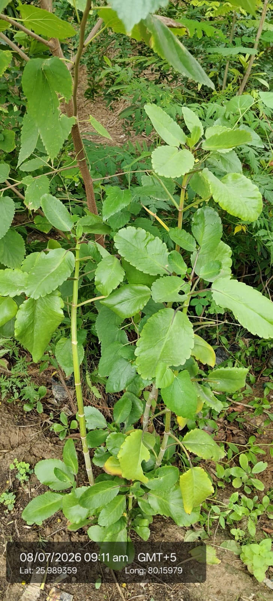

| Scientific name | Bryophyllum pinnatum (syn. Kalanchoe pinnata) |
|---|---|
| Family | Crassulaceae |
| Type | Succulent perennial herb (not a tree or shrub). |
| Category | Herbs |
Habitat & Growing Conditions
- Grows in tropical and subtropical regions, often in gardens, rocky soils, and wastelands.
- Thick fleshy leaves with scalloped edges; can reproduce from leaf margins (“plantlets”).
Ecological & Economic Importance
- Widely used in Ayurveda and folk medicine.
- Leaves are applied for kidney stones, ulcers, and wounds.
- Known for anti-inflammatory, antimicrobial, and analgesic properties.
- Juice of leaves used for cough, asthma, and chest pain.
- Helps in healing burns and cuts due to soothing effect.
- Easy to grow, often kept as a medicinal garden plant.
- Used in home remedies for insect bites and skin infections.
- Plays a role in traditional rituals in some cultures.
- Propagates quickly, making it a hardy survival plant.
- Economically valued as a medicinal herb more than as a food crop.